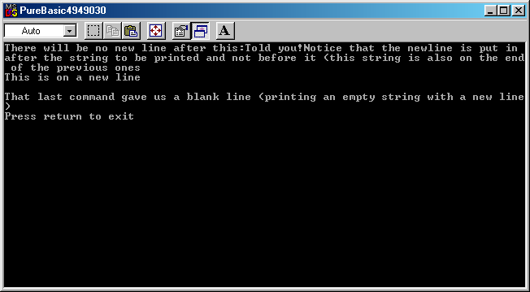

Der Befehl PrintN erwartet einen Parameter: den String, der im Konsolfenster angezeigt werden soll. PrintN gibt keinen Wert zurück. Der String wird im Konsolenfenster an der gegenwärtigen Position des Cursors angezeigt. Der Cursor wird dann auf die nächste Zeile bewegt, so dass jeder Text, der nach dem Anrufen von PrintN angezeigt wird, am Anfang der nächsten Zeile angezeigt wird.
Der Print Befehl ist sehr ähnlich. Er erwartet ebenfalls einen Parameter (einen String) und gibt keinen Wert zurück. Der String wird im Konsolenfenster an der gegenwärtigen Position des Cursors angezeigt. Die Cursor-Position wird aktualisiert, damit sie sich am Ende des gerade ausgegebenen Strings befindet, jedoch nicht auf einer neuen Zeile.
Erinnern Sie sich daran, dass Sie für das Anzeigen von Zahlen diese zuerst in Strings umwandeln müssen. Dies wird mit Hilfe der Befehle Str() und StrF() getan, wie im Variablen Kapitel beschrieben.
Dieses Beispiel erläutert den Unterschied zwischen PrintN und Print. Sie können den Quellcode hier bekommen. Die Ausgabe des Programms wird unterhalb des Beispiels gezeigt.
OpenConsole()
Print("There will be no new line after this:")
Print("Told you!")
PrintN("Notice that the newline is put in after the string to be printed and not before it (this string is also on the end of the previous ones")
PrintN("This is on a new line")
PrintN("")
PrintN("That last command gave us a blank line (printing an empty string with a new line)")
PrintN("Press return to exit")
Input()
CloseConsole()
End

| Vorheriges Thema | Kapitel-Inhalt | Nächstes Thema |
|---|---|---|
| Erstellen von Text-Anzeigen | Benutzerhandbuch Inhalt | Einlesen von Benutzereingaben |